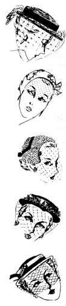

1952—How to Make Hats
by Ruby Carnahan
Introduction
You Are Going to Make Hats
A hat reflects a mood, declares an intention, or celebrates an occasion! But what is a hat? A little material . . . some time . . . some skill . . . some imagination . . . and you have a hat that would cost quite a bit at a retail shop. What's more, if you designed and made the hat, you're wearing an original . . . something you won't meet at a party, or find staring at you from a department store window.
Millinery is an art. It pays rich rewards . . . in self-expression . . . in a delightful hobby . . . in a new, more interesting appearance . . . in building a glamourous wardrobe with a slender budget . . . perhaps in earning a welcome part-time income, or even entering a highly paid profession.
This book will help you, because it is the result of years of experience at designing, making hats and teaching millinery. Its 28 lessons have been planned with great care; each one gives you a fundamental principle that you'll want to remember—to make personalized, stylish hats today, or ten years from today. No matter how infinitely varied hats may look, there are only a few basic forms, and a few basic ways to vary those forms.
To get the most out of this book, follow the sequence of lessons exactly as they are presented. If any lesson seems unusually difficult, or strangely easy . . . carry on . . . remember, that they were planned to give you the principles in the order in which they can most easily be learned and mastered.
In making hats, as in any other craft, perfect workmanship is the final test. And perfect workmanship is the result of practice. A little time, a little concentration, and you'll be pleasantly surprised with the results.
So now you're ready to begin the first lesson. If you've had experience, you may want to start right away with smart new materials; if you're a beginner, you may find it helpful to take an old hat apart, see how it's made, and rebuild it.
In either case, you're lucky. You're embarking on a new experiment—one that can make you lovelier, save you money, earn you money, make you the envied expert of your group.
Stick with it—you'll be glad if you do!
Truly yours,
Ruby Carnahan
If you enjoy VintageSewing.info, there are several ways you can support this site.
Please read our Privacy & Accessibility Policies
Comments to our staff: comments@vintagesewing.info

This work by vintagesewing.info is licensed under a Creative Commons Attribution-Noncommercial-No Derivative Works 3.0 United States License
Copyright © 1997-2008
Vintage Sewing Reference Library, Inc.
A nonprofit public benefit corporation